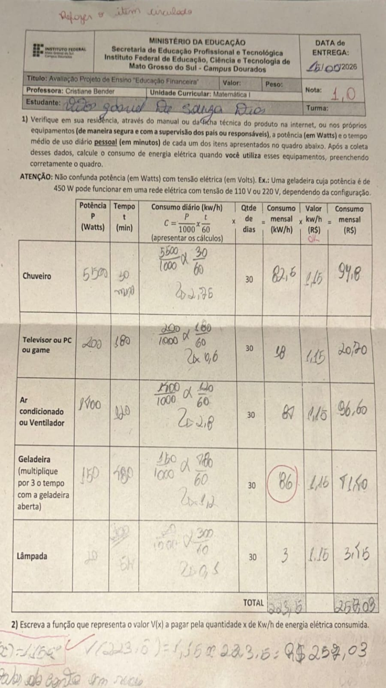

Conteúdo Matemática
Trabalho : Matemática
Profª Cristiane
*No trabalho a seguir, os alunos da turma de Info 1B deveriam verificar o consumo de energia em suas residências, e calcular o preço da conta de luz.
Página inicial
